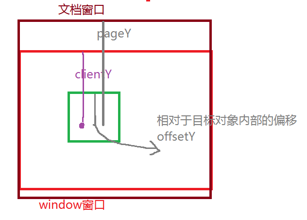

1、复习
1、数组--- 排序 （冒泡 选择） 去重 增删改查 操作方法 新增数组操作方法
2、string ---- 操作方法 split substr substring indexOf lastIndexOf charAt charCodeAt String.fromCharCode replace
3、 Math random() 获取任意区间值 验证码 随机颜色
Date 定义 设置时间 获取时间 倒计时 时间差
4、BOM： window -- （document location event history screen navigator）
5、Dom： html基本结构 节点 节点关系 节点动态操作 （创建 添加 删除） 节点克隆
2、event对象 --- 事件对象
什么是事件？ 在网页中的某个操作就称为事件 当鼠标点击页面某个元素时，会触发 onclick事件
什么是事件对象？
当在网页中操作某个元素时，会产生一个对象，这个对象就是事件对象 event
不同的操作产生的事件对象就不同，他们对应的属性或功能就不同
事件对象的兼容：
document.onclick = function(evt){ evt参数就代表了火狐浏览器的事件对象
var e = evt || event;
}
3、键盘事件对象的属性
keyCode 获取按键值 字母默认值是大写字母的ASCII码 回车键 keyCode值 13
ctrlKey、altKey、shiftKey 当键盘按下时，会得到一个布尔值，如果按下的是这些功能键，得到true，否则得到false
4、鼠标事件对象的属性
clientX / clientY 获取鼠标相对于浏览器窗口边缘的左侧和上部的位置
pageX / pageY 获取鼠标相对文档窗口边缘左侧和顶部的位置，如果没有滚动条，结果和上面的完全一致，如果有滚动条，pageY = clientY + 页面滚走的距离
offsetX / offsetY 相对于目标对象内部的偏移量

5、鼠标事件对象的button属性
button属性 ： 用来区分操作的鼠标按键是 左键、右键 、滚轮
左键：属性值 --- 0
滚轮： 属性值 --- 1
右键： 属性值 ---2
ie浏览器结果值是 ： 左键---1 滚轮 --- 4 右键 --- 2
思考 : 写一个函数，功能实现兼容 button属性值 无论是高版本浏览器还是低版本浏览器：结果都是 0 1 2
function getButton(evt){
var e = evt || event;
if( evt ){ //判断是否是高版本浏览器 该事件参数兼容谷歌和火狐
return e.button;
}else if( window.event ){
switch( e.button ){
case 1 : return 0;
case 4 : return 1;
case 2 : return 2;
}
}
}
6、事件流
当执行某个事件时，事件执行是从子元素向父元素触发或从父元素向子元素触发的过程称为 事件流。
事件流有两种模式：
事件冒泡 ： 从子元素向父元素触发
事件捕获 ： 从父元素向子元素触发
执行原理图：

事件冒泡 ：当某个元素触发某个事件时，相同的事件会向其父元素触发，如果其父元素也有该事件，就会被执行。这个过程就叫做事件冒泡
不是所有的事件都可以产生事件冒泡问题： onload onfocus onblur
7、阻止事件冒泡的兼容
e.stopPropagation() e 代表事件对象兼容
兼容写法：
e.stopPropagation?e.stopPropagation():e.cancelBubble = true;
8、阻止右键菜单的默认行为 (超链接的默认跳转行为也可以通过该方式阻止)
e.preventDefault ? e.preventDefault() : e.returnValue = false;
或
return false;
9、事件绑定
1、写在标签上
2、写在script标签内部
上面的两种写法 ： 只能为同一个元素添加一次同样的事件
3、通过addEventListener 方法为元素绑定事件
10、事件监听
addEventListener()
用法 ：
对象.addEventListener("事件",function(){ 事件处理程序 },[第三个参数是一个布尔值-默认是false])
注意：这里的事件 去掉on
第三个参数：如果是false，就是事件冒泡
如果是true，就是事件捕获
事件监听方法好处：
1、可以为一个元素添加多个同样的事件 ，执行顺序从上到下
2、程序员可以根据事件监听来确定事件到底是要执行捕获还是执行冒泡